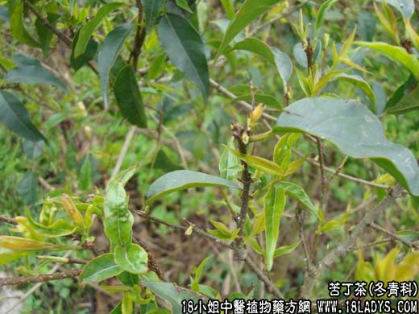

【中药概述】
苦丁茶为冬青科灌木或小乔木植物大叶冬青等的叶。甘、苦、凉。归肝、胆、肺、胃经。
1．散风热，清头目，清肝火：用于风热头痛，目赤，齿痛，肝火上炎，头胀目眩，耳鸣等症。
2．解热毒：用于肠炎，痢疾，水火烫伤，耳脓，乳痈初起等。
【药效鉴别】
苦丁茶散风热，清利头目，与槐米二药合用，一入肝之气分，一入肝之血分，用肝之气血两清。
【药理作用】
对金黄色葡萄球菌、绿色链球菌、卡他球菌、大肠杆菌、绿脓杆菌等有抑制作用。
【化学成分】
含熊果酸，原儿茶酸、鞣质、黄酮甙及糖类等。
【用量用法】
本品10——26g，水煎服，或代茶饮。